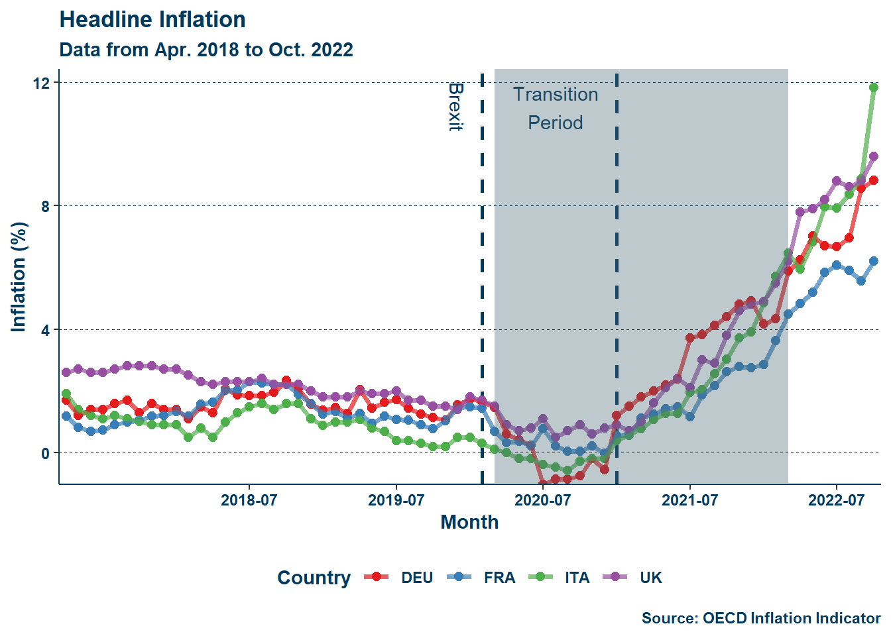
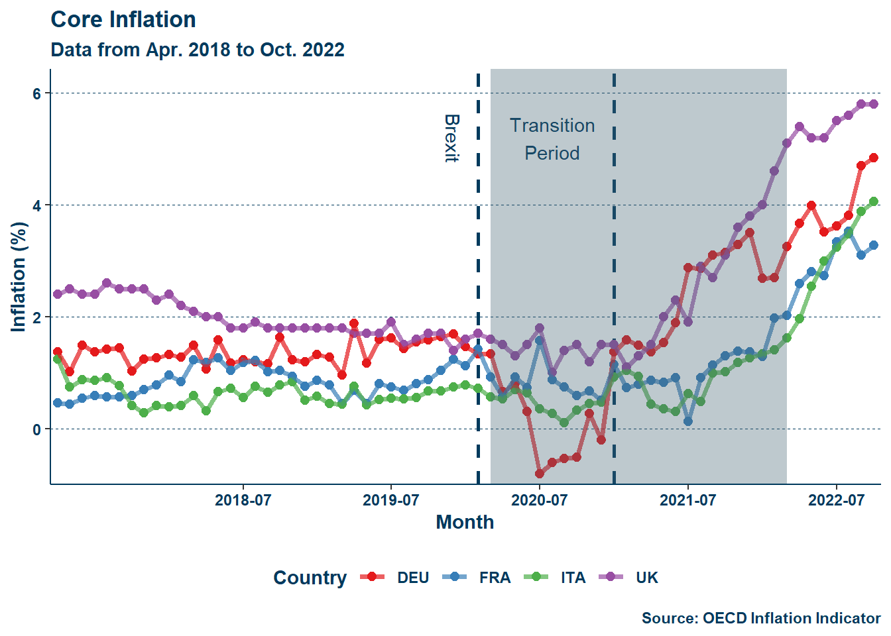
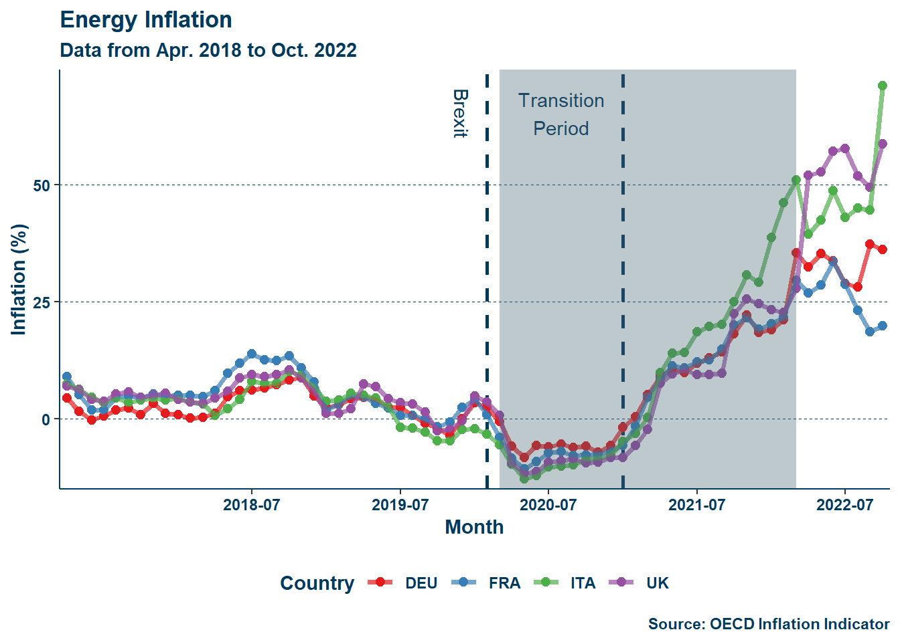
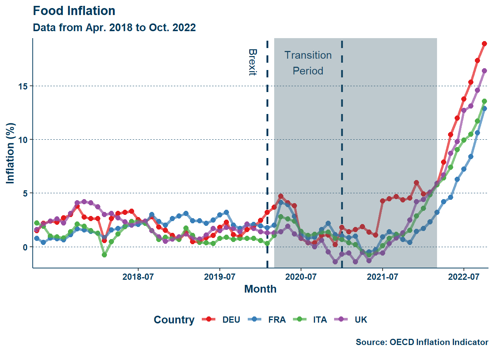

Disentangling the Impact of Brexit on the British Pandemic Economy
While the year 2020 is remembered globally for the long shadow of the COVID-19 pandemic, the United Kingdom (abbreviated as the UK hereafter) holds the immense honor of having an additional thing to remember it by. In February 2020, the UK left the European Union (EU hereafter). Although heralded by the likes of Nigel Farage as a nationally and economically liberating action, the move had significant implications for the British economy. Chief among these—alongside those ever-invaluable fishing rights and the border in Northern Ireland—was the severing (following a transition period) of a large supply of labor from other EU member states and the exit from the free trade common market.
Unfortunately, it is difficult to disentangle the effects of Brexit and the pandemic. Whereas economies the world over experienced the tumult of the pandemic, Brexit was primarily a British experience. This means that any foray into studying the pandemic-era economy of the UK requires including Brexit in the discussion. In this paper, I investigate two questions. First, how well does a general model of inflation hold up under the combined forces of Brexit and the pandemic period? Second, was the inflation of that period and the recovery thereafter a direct product of (caused by) Brexit and the pandemic, or were there rather structural changes to the British economy, and if so, what were those changes? In terms of outcomes, treatments, and controls: if inflation is my outcome, then does controlling for it eliminate the significance of Brexit (the treatment) during the pandemic period?
Brexit was not the most economically sound idea (see: Section 1.2), and it is my hope that through this short project, I may thoroughly illustrate why. The effects of Brexit on the UK are felt at all levels of society and range from demonstrably higher rates of inflation to a tighter labor market when compared to similar countries.
I will first briefly discuss the background of Brexit and then move on to an overview of its implications for labor and prices. I will then conduct a review of the Phillips curve and in particular Gordon’s triangle model (Gordon et al. 1977; Gordon 1981, 1997, 2013), and then discuss my implementation. Next, I will present my naive inflation model, and describe how I alter it to assess the structural effects of Brexit and the pandemic. Finally, I will present my results and their meaning, and close with some key takeaways.
The UK was one of the principal members of the EU by size and economic power. In the same class were only France, Germany, and perhaps Italy. Among these members—specifically among France and Germany—the UK was long least committed to the European project. The reasons for this vary but, as aptly summarized by writers Henley, Rankin, and O’Carroll for The Guardian:
[Britain has] a profound sense of exceptionalism, reinforced by relative economic success and an overwhelmingly Eurosceptic popular press […] This eventually combined to create the impression that the EU was essentially an anti-British plot […] Amid the bitter fallout of the financial crash, mounting public concern over immigration and a political threat from the right in the form of Nigel Farage’s anti-EU [UKIP] party led David Cameron to promise an in-out Brexit referendum if he won the 2015 election. A largely populist, emotive, and evidence-free campaign with the inspired slogan “Take back control” carried the day, with voters motivated by a wide range of factors opting by 52% to 48% in [favor] of the UK leaving the EU.
-Henley, Rankin, and O’Carroll (2020)
This is a familiar narrative for Americans. Following the 2008 financial crisis, right-wing populists gained a foothold in mainstream conversations. In the UK this growth of the populist right put the Conservative Cameron government in the understandably difficult position of doing something it may not have necessarily wanted to do but did in the hope of appealing to a growing voting segment. Understanding all the individual motivations for Brexit is not paramount to understanding its economic implications, but it is useful to have an idea of who was in charge when this happened.
Although the UK left the EU in February 2020, there was a transition period lasting until the end of the same year wherein the former remained within the common market. This means that analyses of the economic effects of Brexit really must begin in January 2021, after the transition period. There are two principal things I wish to consider in terms of changes to the British economy following Brexit—the labor market, and price levels.
Given the limited restrictions on intra-EU travel, and the relatively higher earnings in the UK when compared to some other member states the Isles had in fact long-benefited from EU migration currents. The UK did at the EU level what the US does at a global level—absorb foreign labor looking for higher wages1. The severing of this connection created a new shortfall in labor, one that certainly was not appreciated when, a mere month later, pandemic restrictions were put into place. According to the Centre for European Reform, by June 2022 “[…] there was a significant shortfall of around \(460000\) EU-origin workers, partly but not wholly compensated for by an increase of about \(130000\) non-EU workers” (Springford and Ports 2023). In other words, only a little more than a year after the end of the transition period, \(300000\) people who would have been in the UK and would have contributed their labor supply, were not there. The UK Office for National Statistics reports the employment level as over \(30\) million persons (Powell and Francis-Devine 2024), but that does not mean that this change is a drop in the bucket. Consider labor levels and growth as stocks and flows. Yes, the stock of labor within the UK is large now, but just as capital depreciates, individuals leave the labor force and must be replaced by inflows of new labor. The flow of labor to the UK was down by over \(300000\) persons the year after the Brexit transition ended.
One way to observe changes in labor market conditions is by simply looking at the unemployment rates. Declining unemployment indicates a tightening—relative to the prior period—labor market. Below is a graph of unemployment rates among the UK, France, Germany, Italy, and the EU average:
The shaded region in Figure 1 (a) represents the period from when pandemic lockdown restrictions in the UK were first implemented to when they were last lifted. This period is generally similar in many other European countries in terms of the timeline of restrictions. The dashed vertical lines represent, from left to right, the initial Brexit announcement and the end of the transition period. As can be seen, the onset of the COVID-19 pandemic led to large fluctuations in unemployment but, zooming in on the UK we still notice two things. First, the initial stage of Brexit (February 2020) had minimal impact—a slight uptick in unemployment was recorded following that change and quickly flattened at the beginning of the pandemic. This negligible result is understandable given that the UK still remained within the common market and travel area during this initial stage until the end of the transition period. Second, immediately following the end of the transition period there is a drop in unemployment—albeit also very slight—followed by a more sustained drop thereafter mirroring all other groups with the adjustment to the pandemic era. This second change is slightly more significant as, in all other countries (including the EU average), unemployment either remained at parity with or slightly rose when compared to the preceding period. Whatever the case, it is clear that the early effects of Brexit are somewhat buried by the pandemic.
One problem with using the unemployment rate is that—alone—it does not indicate if a labor market is tight but only if it is tightening, as noted previously. This is because the constitutions of labor markets vary by place. A low unemployment rate in one region is not necessarily low in another. Instead, it is useful to assess labor market conditions across regions according to their respective “natural” rates. From this, we derive the unemployment gap. This indicator is the rate of unemployment, \(U\), less the natural rate of unemployment (NAIRU), \(\overline{U}\), and it allows us to better assess the changes in labor markets in terms of their respective equilibrium levels of unemployment:
\[ \ddot{u} = u - \overline{u} \label{eq:eq_1} \tag{1} \]
The NAIRU can vary by country and through time, and the method for estimating the time-varying natural rate of unemployment (TV-NAIRU) is described later in Section 3.2.1. Looking at the unemployment gap, a very similar story emerges. The shaded region in Figure 1 (b) represents the period from when pandemic lockdown restrictions in the UK were first implemented to when they were last lifted. The unemployment gap fell in the UK in the period immediately following the end of the transition period. Needless to say, there is something different about the composition of the UK labor market following its exit from the common market and travel area.
The effects of the pandemic on labor markets were complicated, and it is clear that labor tightening occurred just about everywhere during the pandemic recovery, but it is also clear the UK had a uniquely sharp and sustained tightening.
Alongside changes to the labor market was an inflation spike that rocked the UK in the latter half of 2021. While inflation, like labor tightening, struck all included, it is worth investigating the role of Brexit. Below is a series of figures detailing inflation across the five entities of interest:
As seen in Figure 2, while the addition of food-energy inflation results in a less eye-catching display, the absence of those two price-shocks in Figure 2 (b) shows inflation in to be higher in the UK than all but the EU average past mid-2021. Adam Posen, a former Monetary Policy Committee member at the Bank of England, and Lucas Rengifo-Keller attribute this to Brexit, writing:
By ending the free movement of EU migrant workers to the UK, the UK government has unilaterally cut the labor supply and its elasticity. By adding new tariff and nontariff trade barriers, the British government has slashed purchasing power and available imports, and it has created inflation during the staggered implementation of the Brexit deal.
-Posen and Rengifo-Keller (2016)
With the exit from the common market, the UK faced higher barriers to trade with its continental neighbors than before. It reasons that higher costs would incur higher price levels. It similarly reasons to say that energy inflation resulted from the onset of the Russo-Ukrainian war and thus was more damaging to continental importers—the timelines match up fairly well. Additionally, the tightening of the labor market outlined in Section 1.2.1 likely resulted in wage inflation, which, as Posen and Rengifo-Keller (2016) pointed out: was higher than in France and Germany.
Upon review of labor and prices in the UK during this period, it is clear that Brexit had an effect, albeit one that is obfuscated by the pandemic. Now two questions remain. First, can a traditional model of inflation still accurately fit the huge shocks of this period? Second, what specifically was most structurally affected by these two things in terms of labor and prices, and can it account for the difference?
In the late 1950s, Bill Phillips identified a relationship between wage pricing and unemployment(Phillips 1958)—dubbed eponymously the Phillips curve. This curve was broadened to describe the relationship between inflation and unemployment when they are inversely related. This simple curve proved to be a somewhat useful, imperfect, guide for macroeconomic policy. However, in the 1970s something strange happened.
The 1970s saw a period of stagflation—high unemployment and inflation—in the United States, signaling that the relationship identified by Phillips was not so ironclad.
Responding to the stagflation of the 1970s, Robert J. Gordon developed a model of inflation that described overall inflation as the result of three forces: inertia, demand, and supply Inertia represents so-called underlying inflation, which amounts in model implementations to lags of the rate of inflation. Demand reflects an “[…] index of excess demand” (Gordon 1997), which is labor market tightness. Lastly, supply concerns price shocks like food or energy inflation. Inertia and supply merely require other rates of inflation, but demand requires a measure of labor market tightness. While the unemployment rate may appear an appealing choice, as noted in Section 1.2.1, there are problems with using it to gauge this tightness. Instead, it is more useful to again focus on the unemployment gap seen in Equation \(\eqref{eq:eq_1}\).
The unemployment gap allows us to better assess the changes in labor markets in terms of their respective equilibrium levels of unemployment. However, its estimation also requires an estimation of the natural rate, which will be seen in Section 3.2.1.
In his 2013 working paper, Gordon uses the model to assess the continued presence of the Phillips curve relationship in modeling inflation by taking data over a period of decades and observing how the model responds, concluding that—at least as of then—the relationship continued to exist (Gordon 2013), and that his model remains robust.
I follow a variation of this model, and again aim to demonstrate its robustness, however I aim to do so across a different time period including perhaps even greater variation in the indicators used in the regression.
For prior work covering this same treatment and time, authors Gupta et al. (2023) analyze the changing British economy through Brexit and the COVID-19 pandemic. The authors use a variety of models and analyses to hone in on changes to unemployment, earnings, and trade. While unemployment increased during the pandemic period, the authors project it to decrease and follow that trend in the years to come, which, in addition to research by Springford and Ports (2023), may reflect labor market tightness attributable to a post-Brexit immigration environment in the United Kingdom.
Knowing already that these are the likely effects of Brexit given this work and the analysis in Section 1.2, I intend rather to investigate if the Gordon model described above in Section 2.2 can adequately account for these changes and what specific structural change—if any—is most responsible for the changes to the British economy in this period.
Authors Gylfason and Hochreiter (2022) compare the Lithuania and Belorussian economies, finding lower rates of inflation and unemployment, respectively. In this study, the treatment is European Union membership and the institutional reforms associated with membership. The authors find that joining the European Union and making the required sociopolitical adjustments resulted in lower inflation and higher unemployment in Lithuania when compared to Belarus—a country that is not a member of the European Union (as of 2024 at least). While a comparison between these two states is not very comparable to larger economies like that of the United Kingdom, this finding is significant because it demonstrates the kinds of changes to expect for a nation joining the EU, thus conversely illustrating what to expect for a nation leaving that union.
Gylfason and Hochreiter (2022) use different models than I do but remains in line with the results I expect later in Section 4 and what was seen in Section 2.3—not being in the EU means higher inflation and a tighter labor market.
All data is sourced from the Organisation for Economic Co-operation and Development (OECD), with monthly time series observations from January 2007 to June 2023 for 26 groups at the national level. I collect data on as many EU (or in the case of the UK, former EU) members as are available from the OECD alongside the EU member-state average—although I do not use this average in my models. Headline, core, food, and energy inflation are all from “Inflation (CPI)” (2017). Unemployment rates are from “Harmonised Unemployment Rate (HUR)” (2017). All data cleaning and modeling is done in R.
All data is measured as percent rates, with inflation being the percent change in consumer price levels between years and unemployment being the proportion of persons in the labor force but not working within a given country. To identify Brexit and the pandemic, I create dummy variables \(\text{BREXITnumeric}\) and \(\text{COVIDnumeric}\) respectively. Additionally, I create a third dummy to identify the UK exclusively among other countries, \(\text{isUKnumeric}\). The conditions for the three dummies are as follows (in the order that they were presented):
All groups studied are treated with the Brexit dummy but only the UK ever has \(text{is_UK_numeric}=1\), and I have observations for all groups before, during, and after the pandemic and for before and after Brexit. The total number of observations for this period is 5148, meaning that there are 198 observations per entity.
To answer my questions of interest I will implement a variation of the Gordon model using the data described above. To do this I will need to also estimate a TV-NAIRU, which unfortunately cuts down the period of usable data to December 2015 to October 2022. This is further explained in the next section Section 3.2.1. The table below shows the final list of variables for all groups over a period from December 2015 to October 2022:
| Variable | Description |
|---|---|
| \(C\pi\) | Core Inflation |
| \(E\pi\) | Energy Inflation |
| \(F\pi\) | Food Inflation |
| \(H\pi\) | Headline Inflation |
| \(\overline{H\pi}\) | Headline Inflation Moving Average |
| \(u\) | Unemployment Rate |
| \(\overline{u}\) | Natural Rate of Unemployment |
| \(\ddot{u}\) | Unemployment Gap |
| \(\text{BREXITnumeric}\) | Conditional dummy for Brexit treatment |
| \(\text{COVIDnumeric}\) | Conditional dummy for pandemic time period |
| \(\text{isUKnumeric}\) | Conditional dummy for if a country in the dataset is the United Kingdom |
Additionally, I do not include the EU average in my NAIRU estimates as it would be redundant given how many EU member states I already have included. In all, I end with \(25\) countries, and \(2075\) observations—\(83\) observations per country—so things should be fine in terms of data.
To test the robustness of the Gordon model, I will construct a simple variation of it and calibrate it with data up to February 2020—before Brexit and the pandemic lockdowns. I will then feed it all the data I have available, resulting in a fitted line for data before February 2020, and a simulated line for the period thereafter. For the structural changes I will construct a naive country-based fixed-effects model and feed it the model all available data (how else would the Brexit and pandemic dummy variables work) and check for significant interaction terms. I will then add individual or like pairs of regressors from the Gordon model as if they were controls to see if their presence upends the significance of those interaction terms. Each control that does such will be recorded.
To estimate a TV-NAIRU Gordon (1997) follows the methodology of Staiger, Stock, and Watson (1997), which involves regressing lags of the unemployment rate rate on the change in core inflation and dividing the intercept by the coefficients on the lagged regressors. From Staiger, Stock, and Watson (1997), consider a quarterly model wherein core inflation is regressed on four lags of the unemployment rate:
\[ C\pi_{t} = \beta_{0}+\beta_{1}u_{t-1}+\beta_{2}u_{t-2}+\beta_{3}u_{t-3}+\beta_{4}u_{t-4} \label{eq:eq_NAIRU1} \tag{2} \]
From Equation \(\eqref{eq:eq_NAIRU1}\) the NAIRU would be derived by:
\[ \overline{u} = \frac{\beta_{0}}{\beta_{1}+\beta_{2}+\beta_{3}+\beta_{4}} \label{eq:eq_NAIRU2} \tag{3} \]
Four lags of unemployment are used for quarterly data in Staiger, Stock, and Watson (1997), so I use twelve for monthly data:
\[ \overline{u} = \frac{\beta_{0}}{\beta_{1}+\beta_{2}+\beta_{3}+\beta_{4}+\beta_{5}+\beta_{6}+\beta_{7}+\beta_{8}+\beta_{9}+\beta_{10}+\beta_{11}+\beta_{12}} \label{eq:eq_NAIRU3} \tag{4} \]
Staiger, Stock, and Watson (1997) go on to use a complex cubic spline, so instead I just run a rolling regression and smooth it with a Hodrick-Prescott filter set to \(\lambda = 14400\). This rolling average regression method results in some observations being lost due to the window of observations per average. The window needs to be sufficiently large while also leaving room for the average to change. I use a window period of \(99\) which evenly divides the total dataset, but unfortunately still leads to the first years being lost as the first \(99\) periods per entity are averaged for the first step of the rolling average. Additionally, once I have the TV-NAIRU estimates, I shift the estimates down to match with other variable observations per month. This results in the last few months being lost. Still, I have over \(2000\) observations for \(25\) countries as noted in Section 3.1.
Now armed with a TV-NAIRU estimate for each country, the triangle can be implemented. For my implementation of the model, I follow a reduced version of Gordon (2013). In that paper, Gordon essentially throws the kitchen sink at the problem: inflation is lagged \(24\) times, with moving averages interspersed every \(4\) lags, and all other variables are similarly lagged at least \(4\) times each. This was for quarterly data, if I were to replicate this method for monthly data I would have \(72\) lags of inflation alone—I am not doing. Rather, I choose to focus on a much narrower set of lags. For my implementation, I lag inflation \(3\) times, with the first (\(1\) month) and last lag (\(13\) months) being a moving average like in Gordon (2013). All other variables include \(1\) lag alongside a contemporaneous (unlagged) observation. This model implementation appears as follows:
\[ \scriptsize H\pi_{n}=\beta_{0}+\beta_{1}MA\pi_{n-1}+\beta_{2}\pi_{n-2}+\beta_{3}MA\pi_{n-13}+ \] \[ \scriptsize\beta_{4}E\pi_{(n)}+\beta_{5}F\pi_{(n)}+ \] \[ \scriptsize \beta_{6}E\pi_{(n-1)}+\beta_{7}F\pi_{(n-1)}+\beta_{8}\ddot{u}_{n}+\beta_{9}\ddot{u}_{n-1} \label{eq:eq_Gordon} \tag{5} \]
The last part of this escapade is the naive difference-in-differences model. It is called naive because it is just a country-based fixed effects model with dummies for Brexit and the pandemic. The model is constructed as follows:
\[ \scriptsize H\pi_{n}= \beta_{0}+\beta_{1}Country+\beta_{2}\text{COVIDnumeric}+\beta_{3}\text{isUKnumeric} \times \text{COVIDnumeric} + \] \[ \scriptsize \beta_{4}\text{BREXITnumeric}+\beta_{5}\text{isUKnumeric} \times \text{BREXITnumeric}+ \] \[ \scriptsize \beta_{6}\text{BREXITnumeric} \times \text{COVIDnumeric}+ \] \[ \scriptsize \beta_{7}\text{isUKnumeric} \times \text{BREXITnumeric} \times \text{COVIDnumeric} \label{eq:eq_naive} \tag{6} \]
The interaction terms detail the effect of Brexit and the pandemic on the UK in particular. Individual or like pairs of regressors from Equation \(\eqref{eq:eq_Gordon}\) are added to Equation \(\eqref{eq:eq_naive}\) to assess the structural effects of Brexit and the pandemic. An example of such an addition is:
\[ \scriptsize H\pi_{n}= \alpha_{0}\ddot{u}_{n} + \alpha_{1}\ddot{u}_{n-1} + \] \[ \scriptsize \beta_{0}+\beta_{1}Country+\beta_{2}\text{COVIDnumeric}+\beta_{3}\text{isUKnumeric} \times \text{COVIDnumeric}+ \] \[ \scriptsize \beta_{4}\text{BREXITnumeric}+\beta_{5}\text{isUKnumeric} \times \text{BREXITnumeric}+ \] \[ \scriptsize \beta_{6}\text{BREXITnumeric} \times \text{COVIDnumeric}+ \] \[ \scriptsize \beta_{7}\text{isUKnumeric} \times \text{BREXITnumeric} \times \text{COVIDnumeric} \label{eq:eq_naive1} \tag{7} \]
In the above example, the contemporaneous and lagged unemployment gaps are added.
Following the model implementations laid out in Section 3.2 I find that the Gordon triangle is still alive and well—even in the UK post-Brexit. Additionally, I find that the most significant contributor to headline inflation in the UK post-Brexit and in the pandemic era was food price levels.
Calibrating the Gordon model with data up to February 2020, I simulate headline inflation through the pandemic and find the model to present predicted values very close to the real reports of inflation through that period. Below is a regression table containing my results:
| Variables | Estimate (Std. Error) |
|---|---|
| \(\overline{H\pi}_{n-1}\) | \(0.646^{***}\) |
| \((0.023)\) | |
| \({H\pi}_{n-2}\) | \(0.208^{***}\) |
| \((0.020)\) | |
| \(\overline{H\pi}_{n-13}\) | \(-0.023^{**}\) |
| \((0.010)\) | |
| \({E\pi}_{n}\) | \(0.082^{***}\) |
| \((0.004)\) | |
| \({F\pi}_{n}\) | \(0.193^{***}\) |
| \((0.010)\) | |
| \({E\pi}_{n-1}\) | \(-0.049^{***}\) |
| \((0.004)\) | |
| \({F\pi}_{n-1}\) | \(-0.123^{***}\) |
| \((0.010)\) | |
| \(\ddot{u}_n\) | \(-0.003\) |
| \((0.005)\) | |
| \(\ddot{u}_{n-1}\) | \(0.003\) |
| \((0.005)\) | |
| \(\text{Constant}\) | \(0.076^{***}\) |
| \((0.018)\) | |
| Observations | \(1237\) |
| \(R^{2}\) | \(0.925\) |
| Adjusted \(R^{2}\) | \(0.924\) |
| Residual Std. Error | \(0.299\) (\(df = 1227\)) |
| F Statistic | \(1,675.709^{***}\) (\(df = 9\); \(1227\)) |
| Note: | \(^{*}p<0.1\); \(^{**}p<0.05\); \(^{***}p<0.01\) |
All lags of all forms of inflation are significant at the \(5\%\) level or higher, with those closer to or at the contemporaneous period having a positve effect on headline inflation, and those further back in time having a negative effect.Interestingly, the unemployment gap does not return to be significant, however, this may be due to the inertia regressors taking over too much of the spotlight—despite the use of moving averages to alleviate this. The fact that the contemporaneous and lagged unemployment gap cancel each other other implies that as well. Lastly, this may be a flaw in my TV-NAIRU estimation method, as the TV-NAIRUs for each of the countries included varies significantly. In the case of the UK, it is known that their core inflation shot past continental Europe during the pandemic recovery. Given that the TV-NAIRU is estimated by a regression on core inflation, such changes should be kept in mind when looking at the results of the unemployment gap. Whatever the case, the model clearly does well, explaining about \(92.4\%\) of the variation in headline inflation and doing so without even having to throw one hundred regressors at it. Moreover, the signs of the coefficients are in line with previous works (Gordon et al. 1977; Gordon 1981, 1997, 2013). The results show that food price shocks in particular had a large (almost \(0.2\) point) impact on headline inflation. The figure below further demonstrates the strength of the model:
Although “eyeballing it” is not the most surefire method of checking for result validity, I struggle to think that a model that produces such a figure as is seen above would be poor at estimating inflation. There is a slight overestimation near the tail-end though, which is worthy of note and is in fact related to the results of my second question in Section 4.2, where it is further explained.
Without the controls of the Gordon model regressors, all interactions one are significant, with two being significant at the \(1\%\) level as seen in the table below:
| Variables | Estimate (Std. Error) |
|---|---|
| […] | […] |
| […] | |
| \(\text{COVIDnumeric}\) | \(-0.783^{***}\) |
| \((0.127)\) | |
| \(\text{BREXITnumeric}\) | \(9.360^{***}\) |
| \((0.139)\) | |
| \(\text{COVIDnumeric:isUKnumeric}\) | \(-0.237\) |
| \((0.633)\) | |
| \(\text{isUKnumeric:BREXITnumeric}\) | \(-2.993^{***}\) |
| \((0.696)\) | |
| \(\text{COVIDnumeric:BREXITnumeric}\) | \(-6.568^{***}\) |
| \((0.206)\) | |
| \(\text{COVIDnumeric:isUKnumeric:BREXITnumeric}\) | \(2.229^{**}\) |
| \((1.029)\) | |
| \(\text{Constant}\) | \(1.387^{***}\) |
| \((0.199)\) | |
| Observations | \(2075\) |
| \(R^{2}\) | \(0.732\) |
| Adjusted \(R^{2}\) | \(0.728\) |
| Residual Std. Error | \(1.793\) (\(df = 2044\)) |
| F Statistic | \(186.054^{***}\) (\(df = 30\); \(2044\)) |
| Note: | \(^{*}p<0.1\); \(^{**}p<0.05\); \(^{***}p<0.01\) |
I did not include the country-based fixed-effects in Table 2 because they would have taken up a great amount of unnecessary space. All regressors return significant coefficients. In particular, \(brexitnumeric\), the triple interaction, and the intercept are the only positive coefficients (excluding country-based fixed-effects where there is variation among countries). This implies that the pandemic had a deflationary effect while Brexit had an inflationary one.
Including a table per adjusted variable would manifest as a bunch of extremely long tables and another \(10\) pages. In short, with \(MA\pi_{n-1}\) the triple interaction is no longer significant but the others are. With \(\pi_{n-2}\) and \(MA\pi_{n-13}\) all are still significant. With all three paired the result is the same as with \(MA\pi_{n-1}\) alone. With \(E\pi_{n}\) or \(E\pi_{n-1}\) or the two paired together all are still significant. With \(F\pi_{n}\) only the UK-Brexit interaction term remains significant. With \(F\pi_{n-1}\) all remain significant. With the two paired the result is the same as with just \(F\pi_{n}\). With \(\ddot{u}_{n}\) or \(\ddot{u}_{n-1}\) or the two paired together all are still significant. Whatever the change (other than the unemployment gap), any added regressor is significant. It is clear then that while the changes of Brexit specifically in the UK outside of the pandemic era remain unexplained by these individual controls, including food price inflation explains much of the variation during the pandemic in the UK. The figure below illustrates the difference between the initial naive model estimation and the same model after contemporaneous food inflation and its one-period lag are added:
First of all, it is clear from Figure 4 that even just including food inflation drastically improves the model. Second, something that may be fairly noticeable in Figure 4 (b) is that the predicted value of inflation again begins to overshoot near the end of the observational period. This is the same as what happened earlier in Section 4.1! While it would of course be preferred that the Gordon model in Figure 3 did not see this, its presence here is instead rather welcome, illustrating the role that food price level inflation may be playing in overestimating inflation in the Gordon model for that period. In the case of Figure 3, I would wager that inertia is not fully accounted for in that period as it is so close to the end of the observational period—were there more observations, the estimation would eventually return following the path of actual reports of inflation. Either way, these results show that through Brexit and the pandemic arose a structural change in the British economy around food pricing—rather than Brexit and the pandemic increasing inflation by their own existence—and this change underlies a notable portion of inflation in the UK during this period.
In February 2020, the UK left the European Union. This action resulted in demonstrably higher rates of inflation and a tighter labor market as noted in Gupta et al. (2023), Springford and Ports (2023), and Posen and Rengifo-Keller (2016). In this paper, I wished to examine if a general model of inflation could adequately follow it when confronted with large changes. In this case, I studied the Gordon model against the combined effects of Brexit and the pandemic in the UK. Further, I wished to assess what specific structural differences, if any, were brought on by Brexit and the pandemic, and if they could be detected by the Gordon model. In the case of the former, I find that the Gordon model is alive and well as always, keeping up just fine with inflation through the pandemic era. The signs of my coefficients in Table 1 are in line with what is expected from the prior works listed. In the case of the latter, I find that food price shocks played a significant role in the inflation experience of post-Brexit pandemic and post-pandemic era Britain. Additionally, while it is probable that given enough time (e.g., provided more periods of observation) the estimate at the end of the observational period would be reduced as inertia is better reflected, it is clear that food inflation plays a noticeable role in explaining inflation in the UK during the pandemic, and for future works it is worth investigating specifics concerning food inflation. The combination of Brexit and the pandemic did not cause inflation in the UK to be higher. Instead, an island nation leaving the EU common market right before a global supply-chain shock made food a lot more expensive there, which then fed into general price inflation. In shorter words, there is a great deal of literature demonstrating how Brexit has hurt the British labor market and led to higher levels of inflation, and the fact that it was finalized during the COVID-19 pandemic certainly did not help.
This paper is imperfect. For future works it would be good to use a better method of estimation for the TV-NAIRU such that more observations may be retained. My estimation method lost years worth of data. In fact, given the high variance in core inflation among European countries, an estimation method of the TV-NAIRU based on a regression on core inflation may push too much separation among them. At the same time, if core inflation is very different, then why could other things not be? Additionally, a more thorough implementation of the Gordon model, like including productivity trends as is done in Gordon (2013) could be of value. I did not include productivity trends because they were difficult to get observations for for all countries, but Gordon argues for their use in his more recent works. Lastly, the naive fixed-effects model could be substituted by another formulation that allows for more variation among periods (e.g., pre-pandemic, pandemic, and post-pandemic rather than pandemic and not pandemic). Despite this room for growth, this paper successfully illustrates the strength of the Gordon model of inflation, and an underlying structural change to the British economy following Brexit and the pandemic.
See: old stereotype of Polish plumbers in Britain (Frayer 2016)↩︎